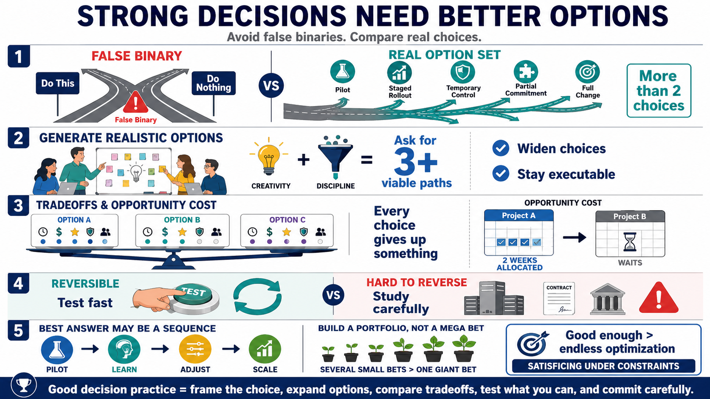

Options and Tradeoffs
Connecting to LMS... Progress: in progress

Narration
A decision is only as strong as the options under consideration. Many poor decisions start with too few options, often presented as a false binary: do this or do nothing, buy the tool or keep suffering, centralize everything or decentralize everything. Real choices are often richer. There may be combinations, staged approaches, experiments, temporary controls, or partial commitments that fit the situation better than either extreme.
Generating realistic options requires creativity and discipline. Creativity helps the team avoid accepting the first visible answer. Discipline keeps the team from inventing options that cannot be executed. A useful question is, what are at least three viable paths? Another is, what would we do if our preferred option were unavailable? These prompts force the group to widen the option set without drifting into fantasy.
Tradeoff analysis asks what each option gains and gives up. Opportunity cost is the value of what is not chosen. If a team spends two weeks hardening one system, those same people cannot spend those two weeks improving another control. If a leader chooses speed, they may give up some quality or resilience. If they choose a very robust process, they may give up flexibility or time.
Decision makers also need to distinguish reversible and irreversible choices. A reversible choice can be tested, rolled back, or adjusted with modest cost. An irreversible or hard-to-reverse choice deserves more care because the downside of being wrong is larger. This distinction prevents teams from overanalyzing small experiments and underanalyzing commitments that lock in architecture, cost, or risk.
Sometimes the best decision is not a single big bet. It may be a portfolio of options, a sequence of steps, a pilot, a staged rollout, or an experiment designed to produce better information. Satisficing, or choosing an option that is good enough under the constraints, may be wiser than endlessly optimizing when time is scarce and uncertainty is high.